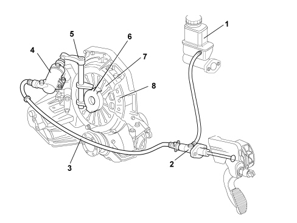

INTRODUCTION - CLUTCH
- Path
- Descriptions > 18 CLUTCH UNIT > INTRODUCTION - CLUTCH
- Kind
- system description
- Applies to
- engines: 1.4 8v; all production periods
- Interactive page
- https://sloeber94.github.io/elrnDB-fDbl/en/#/223000225
Applies to: engines: 1.4 8v; all production periods
CONSTRUCTION SPECIFICATIONS
The clutch is single dry plate type, with a thrust bearing in permanent contact with the pressure spring.
The driven plate is driven by pressure exercised by a diaphragm spring. The clutch release takes place via the hydraulic system operated by the pedal.
On all versions friction materials free from non-environmentally friendly components have been adopted; special care has been taken in the development of new materials and the clutch assembly with a view to guaranteeing excellent performance in terms of modulation and driving comfort with a consequent reduction in weight compared with traditional hydraulic operation. The clutch pump has undergone considerable improvements compared with the components used normally; it comprises:
- plastic casing which makes a further contribution to a reduction in the weight;
- steel cylinder;
- plastic material piston.
The material for the piston and the rubber seals have been specially developed for operating with long strokes; in addition, the seal produced by the rubber-steel contact is excellent compared with traditional type clutch pumps where the seal is on cast iron.
COMPOSITION
The system consists of:
- a clutch pump (master cylinder) (2) fastened to the pedals assembly that compresses the oil;
- a pipe (3) connecting the pump and the clutch operating cylinder;
- a clutch operating cylinder (4) fastened to the gearbox;
- linkage (5) operating the thrust bearing;
- a thrust bearing (6);
- a clutch drip tray with diaphragm springs (7);
- a clutch plate (8);
- a fluid reservoir (1) shared with the braking system.

1. Brake/clutch fluid reservoir
2. Clutch pump
3. Pipe connecting pump and cylinder
4. Clutch operating cylinder
5. Linkage
6. Thrust bearing
7. Diaphragm spring
8. Clutch plate
OPERATION
The pump (2), operated by the clutch pedal, pressurizes the hydraulic circuit and operates the clutch control cylinder (4).
The latter acts on the linkage (5) which "pulls" the thrust bearing (3), overcoming the action of the pressure plate springs (7).
This action causes the release of the clutch plate (8) from the flywheel.
When the pedal is released, the action of the diaphragm springs (7) returns the mechanism to the original position.